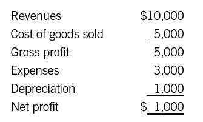

Costs and Expenses
No Hard-and-Fast Rules
Most managers have plenty of personal experience with expenses. But did you know that there are plenty of estimates and potential biases on those expense lines? Let’s examine the major line items.
COST OF GOODS SOLD OR COST OF SERVICES
As you probably do know, expenses on the income statement fall into two basic categories. The first is cost of goods sold, or COGS. As usual, there are a couple of different names for this category—in a service company, for instance, it may be called cost of services (COS). We’ve also frequently seen cost of revenue and cost of sales. For simplicity’s sake, we’ll use the acronyms COGS or COS. At any rate, what matters isn’t the label, it’s what’s included. The idea behind COGS is to measure all the costs directly associated with making the product or delivering the service. The materials. The labor. If you suspect that rule is open to a ton of interpretation, you’re on the money. The accounting department has to make decisions about what to include in COGS and what to put somewhere else.
. . .
Cost of Goods Sold (COGS) and Cost of Services (COS)
Cost of goods sold or cost of services is one category of expenses. It includes all the costs directly involved in producing a product or delivering a service.
. . .
Some of these decisions are easy. In a manufacturing company, for instance, the following costs are definitely in:
• The wages of the people on the manufacturing line
• The cost of the materials that are used to make the product
And plenty of costs are definitely out, such as:
• The cost of supplies used by the accounting department (paper, etc.)
• The salary of the human resources manager in the corporate office
Ah, but then there’s the gray area—and it’s enormous. For example:
• What about the salary of the person who manages the plant that manufactures the product?
• What about the wages of the plant supervisors?
• What about sales commissions?
Are all of these directly related to the manufacturing of the product? Or are they indirect expenses, like the cost of the HR manager? There’s the same ambiguity in a service environment. COS in a service company typically includes the labor associated with delivering the service. But what about the group supervisor? You could argue that his salary is part of general operations and therefore shouldn’t be included in the COS line. You could also argue that he is supporting direct-service employees, so he should be included with them in that line. These are all judgment calls. There are no hard-and-fast rules.
The fact that there aren’t any, frankly, is a little surprising. GAAP runs for many thousands of pages and spells out a lot of detailed rules. You’d think GAAP would say, “The plant manager is out,” or “The supervisor is in.” No such luck; GAAP only provides guidelines. Companies take those guidelines and apply a logic that makes sense for their particular situations. The key, as accountants like to say, is reasonableness and consistency. So long as a company’s logic is reasonable, and so long as that logic is applied consistently, whatever it wants to do is OK.
As to why a manager should care what’s in and what’s out, consider the following scenarios:
• You run the engineering analysis department at an architectural firm, and in the past your staff’s salaries have been included in COS. Now the finance folks are moving all those costs out of COS. It’s perfectly reasonable—even though your department has a lot to do with completing an architectural design, a case can be made that it isn’t directly related to any particular job. So does the change matter? You bet. You and your staff are no longer part of what’s often called “above the line.” That means you’re going to show up differently on the corporate radar screen. If your company focuses on gross profit, for instance, management will be monitoring COS carefully. It will try to ensure that departments affecting COS have everything they need to hit their targets. Once you’re outside of COS—“below the line”—the level of attention may be significantly lower.
• You’re a plant manager charged with making a gross profit of $1 million per month. This month you’re $20,000 short. Then you realize that $25,000 of your COGS is in a line item labeled “contract administration on plant orders.” Does that really belong in COGS? You petition the controller to move those costs to operating expenses. Your controller agrees; the change is done. You hit your target, and everyone is happy. An outsider might even look at what’s happening and believe that gross margins are improving—all from a change youmade because you were trying to hit a target.
. . .
Above the Line, Below the Line
The “line” generally refers to gross profit. Above that line on the income statement, typically, are sales and COGS or COS. Below the line are operating expenses, interest, and taxes. What’s the difference? Items listed above the line tend to vary more (in the short term) than many of those below the line, and so tend to get more managerial attention.
. . .
Again, these changes are legal, so long as they meet the reasonable-and-consistent test. You can even take an expense out of COGS one month and petition to put it back in next month. All you need is a reason good enough to convince the controller (and the auditor, if the changes are material)—and you need to disclose the change if it’s material. Of course, changing the rules constantly from one period to the next would be bad form. One thing we all need from our accountants is consistency.
OPERATING EXPENSES: WHAT’S NECESSARY?
And where do costs go when they are taken out of COGS? Where is “below the line?” That’s the other basic category of costs, namely operating expenses. Some companies refer to operating expenses as sales, general, and administrative expenses (SG&A, or just G&A), while others treat G&A as one subcategory and give sales and marketing its own line. Often a company will base this distinction on the relative size of each. Microsoft chooses to show sales and marketing on a separate line because sales and marketing are a significant portion of the company’s expenses. By contrast, the biotech firm Genentech includes sales and marketing with G&A, the more typical approach. Both companies separate out R&D costs because of their relative importance. So pay attention to how your company organizes these expenses.
. . .
Operating Expenses (Once More)
Operating expenses are the other major category of expenses. The category includes costs that are not directly related to making the product or delivering a service.
. . .
Operating expenses are often thought of and referred to as “overhead.” The category includes items such as rent, utilities, telephone, research, and marketing. It also includes management and staff salaries—HR, accounting, IT, and so forth—plus everything else that the accountants have decided does not belong in COGS.
You can think of operating expenses as the cholesterol in a business. Good cholesterol makes you healthy, while bad cholesterol clogs your arteries. Good operating expenses make your business strong, and bad operating expenses drag down your bottom line and prevent you from taking advantage of business opportunities. (Another name for bad operating expenses is “unnecessary bureaucracy.” Also “lard.” You can probably come up with others.)
One more thing about COGS and operating expenses. You might think that COGS is the same as “variable costs”—costs that vary with the volume of production—and that operating expenses are fixed costs. Materials, for example, are a variable cost: the more you produce, the more material you have to buy. And materials are included in COGS. The salaries of the people in the HR department are fixed costs, and they’re included in operating expenses. Unfortunately, things aren’t so simple here, either. For example, if the supervisors’ salaries are included in COGS, then that line item is fixed in the short run, whether you turn out one hundred thousand widgets or one hundred fifty thousand. Or take selling expenses, which are typically part of SG&A. If you have a commissioned sales force, sales expenses are to some extent variable, but they are included in operating expenses, rather than COGS.
THE POWER OF DEPRECIATION AND AMORTIZATION
Another part of operating expenses that is often buried in that SG&A line is depreciation and amortization. How this expense is treated can greatly affect the profit on an income statement.
We described an example of depreciation earlier in this part—buying a delivery truck and then spreading the cost over the three-year period that we assume the truck will be used for. As we said, that’s an example of the matching principle. In general, depreciation is the “expensing” of a physical asset, such as a truck or a machine, over its estimated useful life. All this means is that the accountants figure out how long the asset is likely to be in use, take the appropriate fraction of its total cost, and count that amount as an expense on the income statement.
In those few dry sentences, however, lurks a powerful tool that financial artists can put to work. It’s worth going into some detail here, because you’ll see exactly how assumptions about depreciation can affect any company’s bottom line.
To keep things simple, let’s assume we start a delivery company and line up a few customers. In the first full month of operation we do $10,000 worth of business. We also incur $5,000 in direct costs (drivers’ wages, gas, etc.) and $3,000 in overhead costs (rent, marketing expense, and so on). At the start of that month, our company bought one of those $36,000 trucks to make the deliveries. Since we’re expecting the truck to last three years, we depreciate it at $1,000 a month (using the simple straight-line depreciation approach).
So a greatly simplified income statement might look like this:

But our accountants don’t have a crystal ball. They don’t know that the truck will last exactly three years. That’s an assumption they’re making. Consider some alternative assumptions:
• They might assume the truck will last only one year, in which case they have to depreciate it at $3,000 a month. That takes $2,000 off the bottom line and moves the company from a net profit of $1,000 to a loss of $1,000.
• Alternatively, they could assume that it will last six years (seventy-two months). In that case, depreciation is only $500 a month, and net profit jumps to $1,500.
Hmm. In the former case, we’re suddenly operating in the red. In the latter, we have increased net profit 50 percent. And it’s all just from changing one assumption about depreciation. Accountants have to follow GAAP, of course, but GAAP allows plenty of flexibility. No matter what set of rules the accountants follow, estimating will be required whenever an asset lasts longer than a single accounting period. The job for the financially intelligent manager is to understand those estimates and to know how they affect the financials.
If you think this is purely an academic exercise, consider the famous example of Waste Management Inc. (WMI). WMI was once a great corporate success story, a leader in the business of hauling trash. So it came as a shock to everybody when the company announced that it would take a pretax charge—a one-time write-off—of $3.54 billion against its earnings. Sometimes one-time charges are taken in advance of a restructuring, as we’ll discuss later in this chapter. But this was different. In effect, WMI was admitting that it had been cooking its books on a previously unimaginable scale. It had actually earned $3.54 billion less in the previous several years than it had reported during that time.
What was going on? WMI had originally grown by buying up other garbage companies. Its growth was rapid, and the company became a darling of Wall Street. When the supply of garbage companies to buy began to dwindle, it bought companies in other industries. But while it was pretty good at hauling trash, it didn’t know how to run those other companies effectively. WMI’s profit margins declined. Its share price plummeted. Desperate to prop up the stock, executives began looking for ways to increase earnings.
Their gaze fell first on their fleet of twenty thousand garbage trucks, for which they’d paid an average of $150,000 apiece. Up to that point, the company had been depreciating the trucks over eight to ten years, which was the standard practice in the industry. That period wasn’t long enough, the executives decided. A good truck could last twelve, thirteen, even fourteen years. When you add four years to your truck depreciation schedule, you can do wonderful things to your bottom line; it’s like the little example of the delivery company multiplied thousands of times over. But the executives didn’t stop there. They realized that they had other assets they could do the same tricks with—about 1.5 million Dumpsters, for example. You could extend each Dumpster’s depreciation period from the standard twelve years to, say, fifteen, eighteen, or twenty years, and you’d pick up another chunk of earnings per year. By fiddling with the depreciation numbers on the trucks and the Dumpsters, Waste Management’s executives were able to pump up pretax earnings by a whopping $716 million. And this was just one of many tricks they used to make profits look larger than they were, which is why the end total was so huge.
Of course, the whole tangled web eventually came unraveled, as fraudulent schemes usually do. By then, however, it was too late to save the company. It was sold to a competitor, which kept the name but changed just about everything else. As for the perpetrators of the fraud, no criminal charges were ever filed against them, although some civil penalties were assessed.
Depreciation is a prime example of what accountants call a noncash expense. Right here, of course, is where they often lose the rest of us. How can an expense be other than cash? The key to that puzzling term is to remember that the cash has probably already been paid. The company already bought the truck. But the expense wasn’t recorded that month, so it has to be allocated over the truck’s life, a little at a time. No more money is going out the door; rather, it’s just the accountant’s way of figuring that this month’s revenue depends on using that truck, so the income statement had better have something in it that reflects the truck’s cost. Incidentally, you should know that there are many methods to determine how to depreciate an asset. You don’t need to know what they are; you can leave that to the accountants. All you need to know is whether the use of the asset is matched appropriately to the revenue it is bringing in.
Amortization is the same basic idea as depreciation, but it applies to intangible assets. These days, intangible assets are often a big part of companies’ balance sheets. Items such as patents, copyrights, and goodwill (to be explained in chapter 11) are all assets—they cost money to acquire, and they have value—but they aren’t physical assets like real estate and equipment. Still, they must be accounted for in a similar way. Take a patent. Your company had to buy the patent, or it had to do the research and development that lies behind it and then apply for it. Now the patent is helping to bring in revenue. So the company must match the expense of the patent with the revenue it helps to bring in, a little bit at a time. When an asset is intangible, though, accountants call that process amortization rather than depreciation. We’re not sure why—but whatever the reason, it’s a source of confusion.
. . .
Noncash Expense
A noncash expense is one that is charged to a period on the income statement but is not actually paid out in cash. An example is depreciation: accountants deduct a certain amount each month for depreciation of equipment, but the company isn’t obliged to pay out that amount, because the equipment was acquired in a previous period.
. . .
Incidentally, economic depreciation implies that an asset loses its value over time. And indeed: a truck used in a delivery business does lose its value as it get older. But accounting depreciation and amortization are more about cost allocation than about loss of value. A truck, for example, may be depreciated over three years so that its accounting value at the end of that time is zero. But it may still have some value on the open market at the end of that time. A patent may be amortized over its useful life, but if technology has advanced beyond it, the patent’s value may be close to zero after a couple of years, regardless of what the accountants say. So assets are rarely worth what the books say they are worth. (We’ll discuss accounting or “book” value in greater detail in part 3.)
ONE-TIME CHARGES: A YELLOW FLAG
Accounting is like life in at least one respect: there’s a lot of stuff that doesn’t fall neatly into categories. So every income statement has a big group of expenses that do not fall into COGS and are not operating expenses either. Every statement is different, but typically you’ll see lines for “other income/expense” (usually this is gain or loss from selling assets, or from transactions unrelated to the everyday operations of the business) and of course “taxes.” Most of these you don’t need to worry about. But there is one line that often turns up after COGS and operating expenses (though it is sometimes included under operating expenses)—a line you should definitely understand because it is often critical to profitability. The most common label for this line is “one-time charge.”
You may occasionally have seen the phrase taking the big bath or something similar in the Wall Street Journal. That’s a reference to these one-time charges, which are also known as extraordinary items, write-offs, write-downs, or restructuring charges. Sometimes write-offs occur, as in Waste Management’s case, when a company has been doing something wrong and wants to correct its books. More often, one-time charges occur when a new CEO takes over a company and wants to restructure, reorganize, close plants, and maybe lay people off. It’s the CEO’s attempt, right or wrong, to improve the company based on his assessment of what the company needs. (Sometimes it’s also an attempt to blame the company’s performance on the previous CEO and thus to garner credit for performance improvements in a subsequent year.) Normally, such a restructuring entails a lot of costs—paying off leases, offering severance packages, disposing of facilities, selling off equipment, and so on. GAAP requires accountants to record expenses as soon as they know that expenses will be incurred, even if they have to estimate exactly what the final figure will be. So when a restructuring occurs, accountants need to estimate those charges and record them.
Here is a real yellow flag—a truly terrific place for bias in the numbers to show up. After all, how do you really estimate the cost of restructuring? Accountants have a lot of discretion, and they’re liable to be off the mark in one direction or another. If their estimate is too high—that is, if the actual costs are lower than expected—then part of that one-time charge has to be “reversed.” A reversed charge actually adds to profit in the new time period, so profits in that period wind up higher than they would otherwise have been—and all because an accounting estimate in a previous period was inaccurate! “Chainsaw Al” Dunlap, the notorious CEO of Sunbeam, was said to regard his accounting department as a profit center, and this may suggest why. (Incidentally, if you ever hear a senior executive refer to the accounting department in this manner, your company might have a problem.)
Of course, maybe the restructuring charge is too small. Then another charge has to be taken later. That clouds the numbers, because the charge isn’t really matched to any revenue in the new time period. This time around, profits are lower than they otherwise would be, again because the accountants made the wrong estimate in an earlier time frame. Some years ago, AT&T seemed to be taking “one-time” restructuring charges frequently over an extended period. The company kept saying that earnings before the restructuring charge were growing—but it didn’t make much difference, because after all those restructuring charges, the company was in pretty rough shape financially. Besides, if a company takes extraordinary one-time restructuring charges for several years in a row, how extraordinary can those charges really be? Walter Schuetze, former chief accountant for the Securities and Exchange Commission, said at the time that such charges have the effect of “deluding the investor into thinking that things are really better than they are.”1
TRACKING EXPENSES DIFFERENTLY DEPENDING ON WHO’S LOOKING
This section isn’t about fraud. It isn’t even about trying to make things look better than they are within the rules. This is about who is looking at the numbers and what the numbers are used for. Most companies track expenses in at least two ways. Some track them in more than two, all for the purpose of following rules and using financial information to manage the business.
How can this be? For one thing, GAAP guidelines do have something to say about how expenses are shown on the income statement. The categories, and what goes into them, are based on guidelines that allow for consistency, conservatism, matching, and the other GAAP principles and guidelines. Companies then make determinations within the guidelines as to how to show expenses in their public statements. For example, Coca-Cola shows the following expenses in its public GAAP income statement:
• Cost of goods sold
• Selling, general, and administrative
• Other operating charges
• Interest expense
• Income taxes
All well and good, but would these categories really help a manager run her unit? We aren’t privy to Coca-Cola’s internal income statements, but here are a few of the categories we suspect many managers (both of the parent corporation and the bottling units) would need to understand. They would want to know, for instance, how much they were spending on:
• Each ingredient used to make the beverages, broken down by beverage
• All the costs related to delivering the product, in sufficient detail so that the costs could be managed
• Departmental costs, such as accounting, human resources, IT,
and so on
• Sales and marketing costs broken down by product, advertising campaign, and more
Finally, some companies share what they reported to the government on their tax returns. These numbers are probably the farthest away from what is useful to a manager. Tax returns follow tax rules, which are not the same as GAAP rules. The returns were probably prepared by tax accountants, a subspecialty of the profession. So tax returns look different from conventional financial statements. It isn’t fraud, it’s just different ways of looking at the same reality.